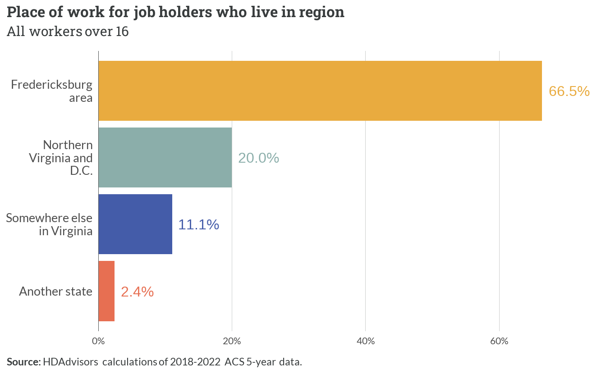
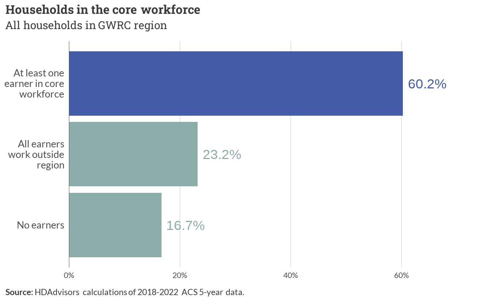
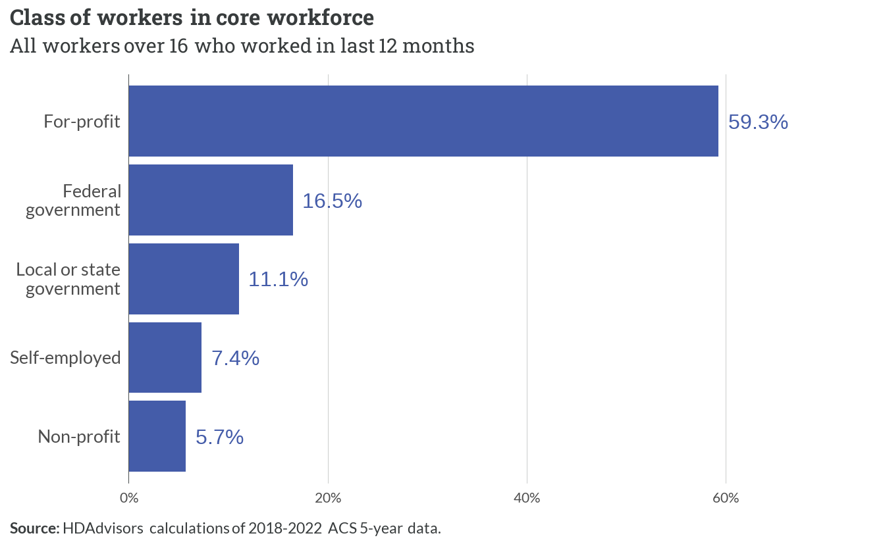
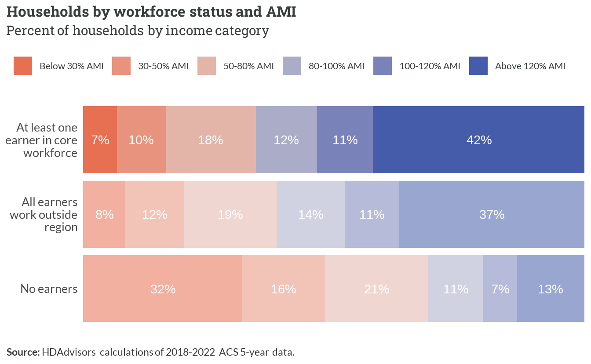
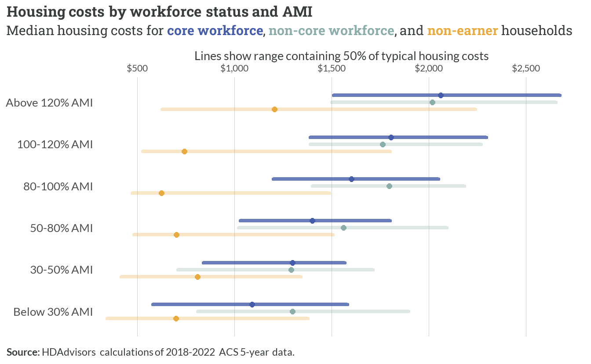
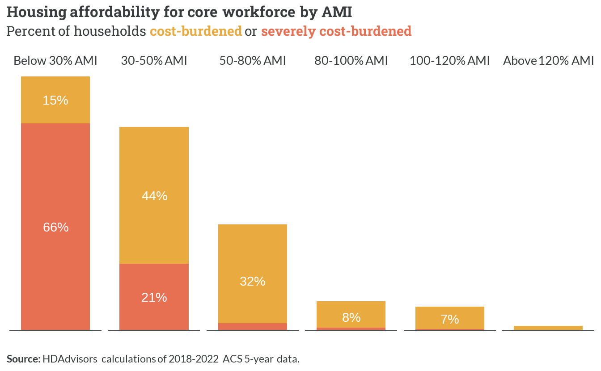

4 Core workforce spectrum
This chapter assesses the housing spectrum for the region’s core workforce. This includes all households where at least one member is employed at a job also located within the region.
Defining the “core workforce”
For every record of an employed person, the Public Use Microdata Sample (PUMS) includes a variable for the place-of-work Public Use Microdata Area (“POWPUMA”). Households with at least one person who has worked in the last 12 months and whose POWPUMA values correspond to the Fredericksburg area (Planning District 16) were designated as members of the core workforce.
4.1 Overview
Identifying the core workforce
Overall commuting trends — 2/3 of all workers are in core workforce
When sorted into their respective households — most households are part of core workforce (79,545, 60.2%)

Common industries and occupations
Most workers employed at private for-profit businesses in the region

Most common industries where core workforce is employed
| Industry group | Workers | Percent |
|---|---|---|
| Retail and Wholesale | 18,481 | 15% |
| Professional Services | 18,353 | 15% |
| Healthcare and Social Assistance | 16,261 | 13% |
| Public Administration and Military | 15,594 | 12% |
| Education | 12,278 | 10% |
Most common job types of core workforce — across all industries
| Occupational group | Workers | Percent |
|---|---|---|
| Administrative and Clerical Support | 14,226 | 11% |
| Leadership and Management | 13,711 | 11% |
| Sales, Marketing, and Customer Service | 12,655 | 10% |
| Healthcare and Medical Services | 10,343 | 8% |
| Transportation and Logistics | 9,176 | 7% |
Income
Core workforce households more likely to have incomes above 120% AMI, otherwise distribution is similar to households whose workers all have jobs outside of the region

Household characteristics
Most households in core workforce are headed by couples who both hold jobs in the region
| Household type | Children | Earners | Percent |
|---|---|---|---|
| Couple | Yes | Two | 23% |
| Couple | No | Two | 20% |
| Individual | No | One | 12% |
| Couple | Yes | One | 8% |
| Couple | No | One | 8% |
Affordability
…

…

4.2 Below 30% AMI
…
| Household type | Children | Earners | Percent |
|---|---|---|---|
| Individual | No | One | 21% |
| Single parent | Yes | One | 17% |
| Couple | Yes | One | 17% |
…
| Ten Most Common Occupations | |
|---|---|
| 1. Customer Service Representatives | 6. Nursing Assistants |
| 2. Cooks | 7. Maids And Housekeeping Cleaners |
| 3. Cashiers | 8. Laborers And Freight, Stock, And Material Movers, Hand |
| 4. First-Line Supervisors Of Retail Sales Workers | 9. Sales And Related Workers, All Other |
| 5. Driver/Sales Workers And Truck Drivers | 10. Retail Salespersons |
4.3 30-50% AMI
…
| Household type | Children | Earners | Percent |
|---|---|---|---|
| Individual | No | One | 19% |
| Couple | Yes | One | 15% |
| Single parent | Yes | One | 13% |
…
| Ten Most Common Occupations | |
|---|---|
| 1. Construction Laborers | 6. Retail Salespersons |
| 2. Cooks | 7. First-Line Supervisors Of Retail Sales Workers |
| 3. Driver/Sales Workers And Truck Drivers | 8. Stockers And Order Fillers |
| 4. Cashiers | 9. Other Managers |
| 5. Janitors And Building Cleaners | 10. Receptionists And Information Clerks |
4.4 50-80% AMI
…
| Household type | Children | Earners | Percent |
|---|---|---|---|
| Couple | Yes | Two | 25% |
| Individual | No | One | 16% |
| Couple | No | Two | 14% |
…
| Ten Most Common Occupations | |
|---|---|
| 1. Driver/Sales Workers And Truck Drivers | 6. Stockers And Order Fillers |
| 2. Cashiers | 7. Registered Nurses |
| 3. Retail Salespersons | 8. Maids And Housekeeping Cleaners |
| 4. First-Line Supervisors Of Retail Sales Workers | 9. Laborers And Freight, Stock, And Material Movers, Hand |
| 5. Elementary And Middle School Teachers | 10. Customer Service Representatives |
4.5 80-100% AMI
…
| Household type | Children | Earners | Percent |
|---|---|---|---|
| Couple | Yes | Two | 28% |
| Couple | No | Two | 18% |
| Couple | Yes | One | 10% |
…
| Ten Most Common Occupations | |
|---|---|
| 1. Elementary And Middle School Teachers | 6. Waiters And Waitresses |
| 2. Retail Salespersons | 7. Secretaries And Administrative Assistants, Except Legal, Medical, And Executive |
| 3. Software Developers | 8. First-Line Supervisors Of Retail Sales Workers |
| 4. Customer Service Representatives | 9. Insurance Sales Agents |
| 5. Other Managers | 10. Landscaping And Groundskeeping Workers |
4.6 100-120% AMI
…
| Household type | Children | Earners | Percent |
|---|---|---|---|
| Couple | Yes | Two | 27% |
| Couple | No | Two | 18% |
| Individual | No | One | 9% |
…
| Ten Most Common Occupations | |
|---|---|
| 1. Cashiers | 6. Other Managers |
| 2. First-Line Supervisors Of Retail Sales Workers | 7. Retail Salespersons |
| 3. Driver/Sales Workers And Truck Drivers | 8. Software Developers |
| 4. Laborers And Freight, Stock, And Material Movers, Hand | 9. Postal Service Mail Carriers |
| 5. Elementary And Middle School Teachers | 10. Teaching Assistants |
4.7 Above 120% AMI
…
Couples with no children but multiple earners would include adult, working children living with their parents
| Household type | Children | Earners | Percent |
|---|---|---|---|
| Couple | No | Two | 30% |
| Couple | Yes | Two | 25% |
| Couple | No | Multiple | 11% |
…
Inclusion of some lower-wage jobs here (e.g. cashiers) implies many live with a second earner who brings in relatively more income
| Ten Most Common Occupations | |
|---|---|
| 1. Other Managers | 6. Retail Salespersons |
| 2. Elementary And Middle School Teachers | 7. Secretaries And Administrative Assistants, Except Legal, Medical, And Executive |
| 3. Software Developers | 8. Cashiers |
| 4. First-Line Supervisors Of Retail Sales Workers | 9. Financial Managers |
| 5. Registered Nurses | 10. Driver/Sales Workers And Truck Drivers |